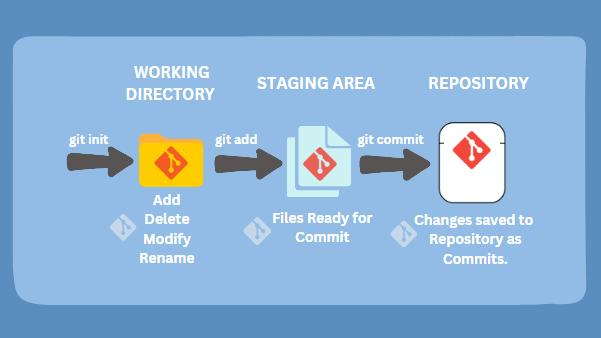

Version Control System helps developers track source code changes, maintain history, collaborate with teams, and restore previous versions.
Developer
↓
Version Control System
↓
Source Code History
Back to Top
| Type | Full Form |
|---|---|
| LVCS | Local Version Control System |
| CVCS | Centralized Version Control System |
| DVCS | Distributed Version Control System |
VCS
|
-----------------------
| | |
LVCS CVCS DVCS
Back to Top
In CVCS, all developers connect to a central server.
Central Server
|
---------------------
| | |
Developer Developer Developer
Every developer has a complete local copy of repository and history.
Developer Repo ↔ Central Repo ↔ Developer Repo
Git is a Distributed Version Control System used to track source code changes.
+----------------------+ | GIT | +----------------------+ | Version Control | | Distributed | | Open Source | | Fast & Secure | +----------------------+Back to Top
Git mainly contains:
Working Directory
↓
git add
↓
Staging Area
↓
git commit
↓
Local Repository

Back to TopRepository is a storage location that contains:
+----------------------+ | REPOSITORY | +----------------------+ | Files | | Commits | | Branches | | History | +----------------------+Back to Top
sudo apt update sudo apt install git -y
git --version
git config --global user.name "YourName" git config --global user.email "your@email.com"Back to Top
| Command | Purpose |
|---|---|
| git init | Initialize Repository |
| git status | Check Status |
| git add . | Add Files |
| git commit | Save Changes |
| git log | View History |
| git push | Upload Changes |
| git pull | Download Changes |
git init git status git add . git commit -m "message" git push git pullBack to Top
Developer
↓
Working Directory
↓
git add
↓
Staging Area
↓
git commit
↓
Local Repository
↓
git push
↓
Remote Repository
Git is a Distributed Version Control System used to track source code changes.
| CVCS | DVCS |
|---|---|
| Central server required | Local repository available |
| Internet dependent | Offline work possible |
| Single point failure | Safer architecture |
| git add | git commit |
|---|---|
| Moves files to staging area | Saves changes permanently |
+--------------------------------+ | QUICK REVISION | +--------------------------------+ | Git = DVCS | | git add = staging | | git commit = save | | Repository = code history | +--------------------------------+Back to Top